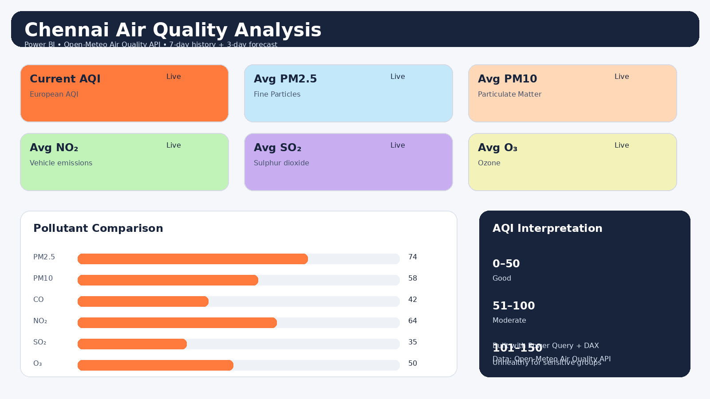

CHENNAI AIR QUALITY
POWER BI DASHBOARD
POWER BI DASHBOARD
Power BI • API Analytics
Chennai Air Quality Analysis
Interactive air-quality reporting using hourly Open-Meteo data for Chennai, covering historical and forecast periods.
Data-to-dashboard reporting
Converted hourly API data into a reusable
Power BI report for monitoring pollutants
and interpreting AQI trends.
- Extracted hourly air-quality data from the Open-Meteo API, including PM2.5, PM10, CO, NO₂, SO₂, O₃ and AQI.
- Cleaned and transformed historical and forecast datasets using Power Query.
- Developed DAX measures to calculate pollutant KPIs and analyze air-quality trends.
- Created interactive Power BI visuals to compare pollutant levels across different time periods.
- Designed an executive-friendly dashboard to simplify air-quality monitoring and interpretation.